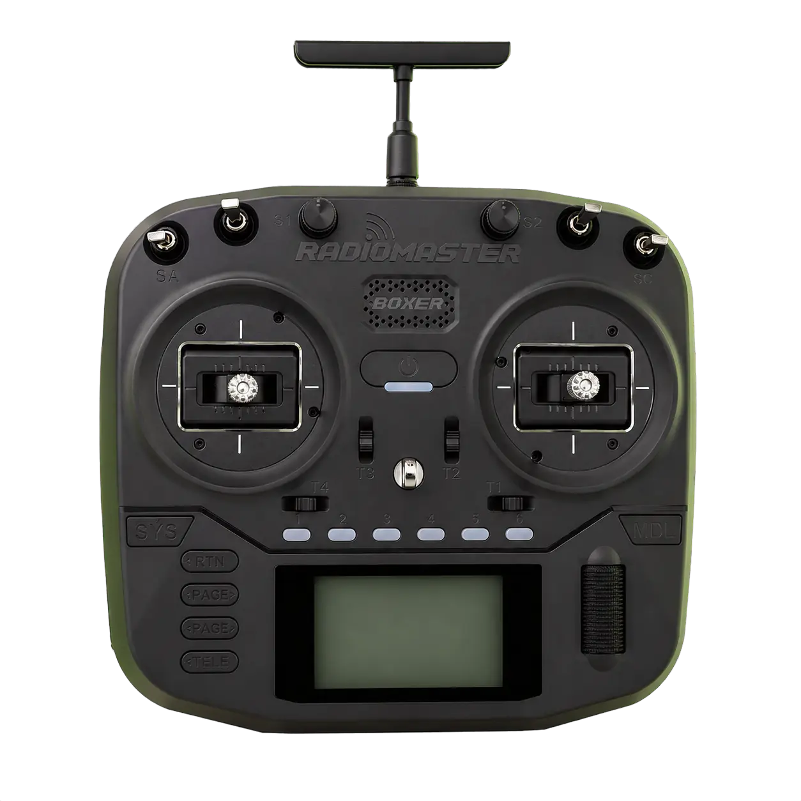
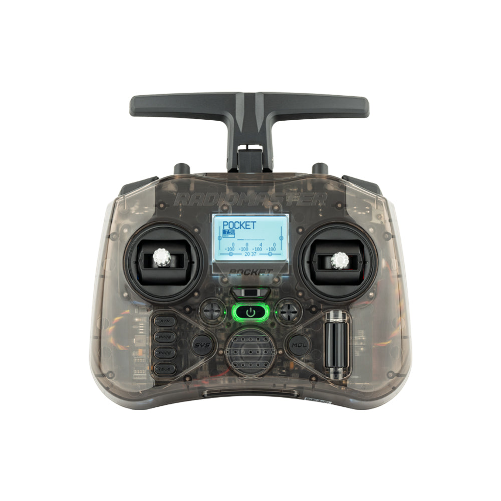

ДЛЯ ПИЛОТОВ · EDGETX
У каждого полёта
должен быть свой голос.
Выбери озвучку для своей аппаратуры. Послушай знакомые команды и найди ту самую атмосферу перед взлётом.
ПУЛЬТ НА СВЯЗИ ●
✳
✳
55°45′ N / 37°37′ E

RADIO / 01ТВОЙ ПУЛЬТ.
ТВОИ ПРАВИЛА.
ТВОИ ПРАВИЛА.
RADIO CONTROL · FPV · EDGETX

POCKET / 02 HELLO RADIO / V12
HELLO RADIO / V12СЛУШАЙ ПЕРЕД ПОКУПКОЙ✳РУССКАЯ ОЗВУЧКА✳ДЛЯ ТВОЕГО ПУЛЬТА✳СКИДКА 10% ОТ ДВУХ НАБОРОВ
КОЛЛЕКЦИЯ ГОЛОСОВ
Как звучит
твой полёт?
Нажимай на большие кнопки ниже: каждая включает фразу. Слушай, сравнивай и выбирай свой голос.
Нажми на кнопку озвучки, чтобы послушать
После проигрывания появится следующая. Всего по пять примеров в каждой версии — после пятой снова первая.
ПОНРАВИЛСЯ ГОЛОС?
Забирай его в свой пульт.
Выбери озвучку, уточни сумму у продавца и получи ссылку после оплаты.
ВСЁ ПРОСТО
От прослушивания
до первого полёта.
01
Выбери голос
Послушай фразы и реши, какой набор тебе ближе.
02
Напиши продавцу
Уточни стоимость и состав заказа в переписке на Авито.
03
Оплати и получи
Оплати по СБП или через Авито и сообщи продавцу. Ссылку пришлём вручную.